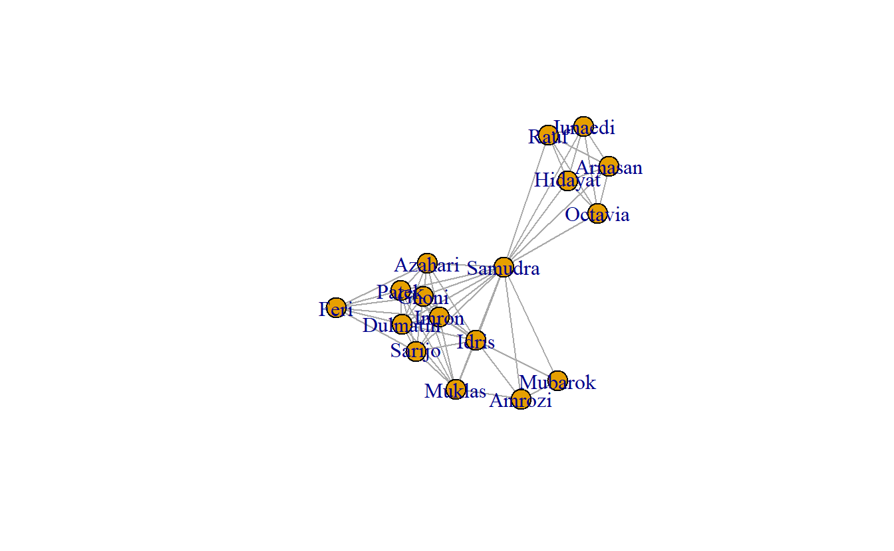

Here, we will use data collected by Stuart Koschade of the 17 individuals who participated in the first Bali bombing. Koschade (2006) recorded both the ties between the individuals, as well as the strength of the tie between them.
Importing One-Mode Social Network Data
Option 1: Importing One-Mode Network Data in Matrix Format
One way is to read network in from a matrix saved as a csv file.
# First, read the csv file using the required arguments
koschade_dat <- read.csv(file = "data/Koschade Bali (Matrix).csv",
header = TRUE,
row.names = 1,
check.names = FALSE)
# Now, coherce the data.frame to a matrix
koschade_mat <- as.matrix(koschade_dat)
The two-step operation above could be combined:
koschade_mat <- read.csv(file = "data/Koschade Bali (Matrix).csv",
header = TRUE,
row.names = 1,
check.names = FALSE) %>%
as.matrix()
Turn the matrix into an igraph object using the graph_from_adjacency_matrix() function from the igraph library:
koschade1_ig <- graph_from_adjacency_matrix(adjmatrix = koschade_mat,
mode = "undirected",
weighted = TRUE)
Now that the matrix has been imported, let’s examine the object. First, take a look at it’s class:
## [1] "igraph"
What is it? If you ran the code above the printout on your console should read igraph. Many R objects have a class, which describes a type of object, describing the properties it possesses, how it behaves, and how it relates to other objects and functions (Wickham 2019). An igraph class denotes that this object is an igraph graph and that it will work with the functions from this library.
One key characteristic of igraph graphs is that they are printed to the screen in a special format:
## IGRAPH 2ca8483 UNW- 17 63 --
## + attr: name (v/c), weight (e/n)
## + edges from 2ca8483 (vertex names):
## [1] Muklas --Amrozi Muklas --Imron Muklas --Samudra Muklas --Dulmatin
## [5] Muklas --Idris Muklas --Azahari Muklas --Ghoni Muklas --Patek
## [9] Muklas --Sarijo Amrozi --Samudra Amrozi --Idris Amrozi --Mubarok
## [13] Imron --Samudra Imron --Dulmatin Imron --Idris Imron --Azahari
## [17] Imron --Ghoni Imron --Patek Imron --Feri Imron --Sarijo
## [21] Samudra--Dulmatin Samudra--Idris Samudra--Mubarok Samudra--Azahari
## [25] Samudra--Ghoni Samudra--Arnasan Samudra--Rauf Samudra--Octavia
## [29] Samudra--Hidayat Samudra--Junaedi Samudra--Patek Samudra--Sarijo
## + ... omitted several edges
This printout provides important information about the object. The first line starts with IGRAPH, which denotes that this is an igraph graph. The following seven character code is the unique id for the graph. The following four letters distinguish whether:
- The graph is directed (
D) or undirected (U)
- The graph is named (e.g., vertex names are set) (
N)
- The graph is weighted (
W)
- The graph is bipartite (
B)
The second line (prefixed with +attr:) includes the attributes of the graph (g), the vertices (v), and edges (e). For instance, in this example, the name attribute is a vertex attribute, while weight is an edge attribute. The remainder of the printout (prefixed with + edges) includes a sample of the relationships in the graph.
One advantage of storing data as an igraph object is that the library has functions to transform relational records into a variety of formats. For example, from igraph to an edge list. To do such, pass the koschade1_ig object to the get.data.frame() function.
get.data.frame(koschade1_ig) %>%
head(5)
## from to weight
## 1 Muklas Amrozi 2
## 2 Muklas Imron 2
## 3 Muklas Samudra 1
## 4 Muklas Dulmatin 1
## 5 Muklas Idris 5
Similarly, edge and node attributes can be fetched back from the igraph object. For example, extract a vector of edge weights, which we can use later vary edge width in our visualizations.
edge_weight_1 <- get.edge.attribute(koschade1_ig,
name = "weight") # Attribute name
Option 2: Importing One-Mode Network Data as an Edge List
Here is how we can import an edge list, and then check the first few rows with the head() command.
koschade2_el <- read.csv(file = "data/Koschade Bali (Edge).csv",
header = TRUE)
head(koschade2_el)
## Source Target Weight
## 1 Muklas Amrozi 2
## 2 Muklas Imron 2
## 3 Muklas Samudra 1
## 4 Muklas Dulmatin 1
## 5 Muklas Idris 5
## 6 Muklas Azahari 1
Convert the edge list to an igraph object and check for basic information.
koschade2_ig <- graph_from_data_frame(d = koschade2_el,
directed = FALSE)
# Look at the printout
koschade2_ig
## IGRAPH 2cc1008 UN-- 17 63 --
## + attr: name (v/c), Weight (e/n)
## + edges from 2cc1008 (vertex names):
## [1] Muklas --Amrozi Muklas --Imron Muklas --Samudra Muklas --Dulmatin
## [5] Muklas --Idris Muklas --Azahari Muklas --Ghoni Muklas --Patek
## [9] Muklas --Sarijo Amrozi --Samudra Amrozi --Idris Amrozi --Mubarok
## [13] Imron --Samudra Imron --Dulmatin Imron --Idris Imron --Azahari
## [17] Imron --Ghoni Imron --Patek Imron --Feri Imron --Sarijo
## [21] Samudra--Dulmatin Samudra--Idris Samudra--Mubarok Samudra--Azahari
## [25] Samudra--Ghoni Samudra--Arnasan Samudra--Rauf Samudra--Octavia
## [29] Samudra--Hidayat Samudra--Junaedi Samudra--Patek Samudra--Sarijo
## + ... omitted several edges
Option 3: Importing One-Mode Network Data in Pajek Format
Another way to bring the data into igraph is to import the data from the Pajek file (*.net). The read_graph() function is able to read graphs from multiple foreign formats. Note that by default the command brings data in as a directed network. We’ll change that below.
koschade3_ig <- read.graph(file = "data/Koschade Bali.net",
format = "pajek")
# Look at the printout
koschade3_ig
## IGRAPH 2cc5467 UNW- 17 63 --
## + attr: id (v/c), name (v/c), x (v/n), y (v/n), z (v/n), weight (e/n)
## + edges from 2cc5467 (vertex names):
## [1] Muklas --Amrozi Muklas --Imron Muklas --Samudra Muklas --Dulmatin
## [5] Muklas --Idris Muklas --Azahari Muklas --Ghoni Muklas --Patek
## [9] Muklas --Sarijo Amrozi --Samudra Amrozi --Idris Amrozi --Mubarok
## [13] Imron --Samudra Imron --Dulmatin Imron --Idris Imron --Azahari
## [17] Imron --Ghoni Imron --Patek Imron --Feri Imron --Sarijo
## [21] Samudra--Dulmatin Samudra--Idris Samudra--Mubarok Samudra--Azahari
## [25] Samudra--Ghoni Samudra--Arnasan Samudra--Rauf Samudra--Octavia
## [29] Samudra--Hidayat Samudra--Junaedi Samudra--Patek Samudra--Sarijo
## + ... omitted several edges
Transform the graph object to a data.frame and view it (View()).
koschade3_ig %>%
get.data.frame(what = "edges") %>%
head()
## from to weight
## 1 Muklas Amrozi 2
## 2 Muklas Imron 2
## 3 Muklas Samudra 1
## 4 Muklas Dulmatin 1
## 5 Muklas Idris 5
## 6 Muklas Azahari 1
Note that this command brings up a data for a directed (asymmetric) network. We need to convert the graph from directed to undirected using the as.undirected() function.
koschade3_ig <- as.undirected(koschade3_ig,
# Specifies what to do with the edge attributes
edge.attr.comb = list(weight = "mean"))
# Look at the printout
koschade3_ig
## IGRAPH 2ccd358 UNW- 17 63 --
## + attr: id (v/c), name (v/c), x (v/n), y (v/n), z (v/n), weight (e/n)
## + edges from 2ccd358 (vertex names):
## [1] Muklas --Amrozi Muklas --Imron Muklas --Samudra Muklas --Dulmatin
## [5] Muklas --Idris Muklas --Azahari Muklas --Ghoni Muklas --Patek
## [9] Muklas --Sarijo Amrozi --Samudra Amrozi --Idris Amrozi --Mubarok
## [13] Imron --Samudra Imron --Dulmatin Imron --Idris Imron --Azahari
## [17] Imron --Ghoni Imron --Patek Imron --Feri Imron --Sarijo
## [21] Samudra--Dulmatin Samudra--Idris Samudra--Mubarok Samudra--Azahari
## [25] Samudra--Ghoni Samudra--Arnasan Samudra--Rauf Samudra--Octavia
## [29] Samudra--Hidayat Samudra--Junaedi Samudra--Patek Samudra--Sarijo
## + ... omitted several edges
Once again, extract the edge list from the graph and view the data. Note that the order of nodes may change (but all should be fine).
koschade3_ig %>%
get.data.frame(what = "edges") %>%
head()
## from to weight
## 1 Muklas Amrozi 2
## 2 Muklas Imron 2
## 3 Muklas Samudra 1
## 4 Muklas Dulmatin 1
## 5 Muklas Idris 5
## 6 Muklas Azahari 1
Plotting (Visualizing) the Koschade Network
Here’s a simple plot using igraph.

# Note that you can also plot the other two graph:
# plot(koschade2_ig)
# plot(koschade3_ig)
Let’s try making some more sophisticated plots. Before we do that, however, let’s save the coordinates so that the remaining plots will have the same layout. Here, we will use the Fruchterman Reingold layout algorithm (layout_with_kk()).
coords <- layout_with_fr(koschade1_ig)
Now, visualize the network with some additional parameters, such as changing the node color (i.e., vertex.color), the label size (i.e., vertex.label.cex), and the node label color (i.e., vertex.label.color). From here on out, we’ll just use the koschade1_ig network.
plot(koschade1_ig,
layout = coords,
vertex.color = "Skyblue2",
vertex.label.cex = .6,
vertex.label.color = "black")

Now, let’s size the edges by tie strength and plot again.
plot(koschade1_ig,
layout = coords,
vertex.color = "Skyblue2",
vertex.label.cex = .6,
vertex.label.color = "black",
# Recall the edge weight vector previously created
edge.width = edge_weight_1)

Note that the layout above is the same as the previous layout. This is helpful when presenting successive graphs in your papers and theses. It makes it easier for readers to compare the network graphs.
We can also change the edges to curved edges.
plot(koschade1_ig,
layout = coords,
vertex.color = "Skyblue2",
vertex.label.cex = .6,
vertex.label.color = "black",
edge.width = edge_weight_1,
edge.curved = TRUE)

Saving Network Plots (e.g., pdf, jpeg, png, tiff)
Save final plot in various formats.
Begin by saving the output in PDF format. To do such, use the pdf() function, which starts the graphics driver for producing PDFs.
# Start the graphic driver, name output file, and set size
pdf(file = "koschade1.pdf",
width = 4, height = 4)
# Plot the output into the file
plot(koschade1_ig,
layout = coords,
vertex.color = "Skyblue2",
vertex.label.cex = .6,
vertex.label.color = "black",
edge.width = edge_weight_1)
# Turn off the graphics driver
dev.off()
To store the image as a JPEG, use the jpeg() function. The bg = "transparent option saves the graphs with a transparent background (rather than white), which can be helpful when placing in slides or on non-white backgrounds.
jpeg(file = "koschade1.jpg",
width = 4, height = 4,
units = 'in',
res = 600,
bg = "transparent")
plot(koschade1_ig,
layout = coords,
vertex.color = "Skyblue2",
vertex.label.cex = .6,
vertex.label.color = "black",
edge.width = edge_weight_1)
dev.off()
To store the image as a PNG, use the png() function.
png(file = "koschade1.png",
width = 4, height = 4,
units = 'in',
res = 300,
bg = "transparent")
plot(koschade1_ig,
layout = coords,
vertex.color = "Skyblue2",
vertex.label.cex = .6,
vertex.label.color = "black",
edge.width = edge_weight_1)
dev.off()
To store the image as a TIFF, use the tiff() function.
tiff(file = "koschade3.tif",
width = 4, height = 4,
units = 'in',
res = 300,
bg = "transparent")
plot(koschade1_ig,
layout = coords,
vertex.color = "Skyblue2",
vertex.label.cex = .6,
vertex.label.color = "black",
edge.width = edge_weight_1)
dev.off()